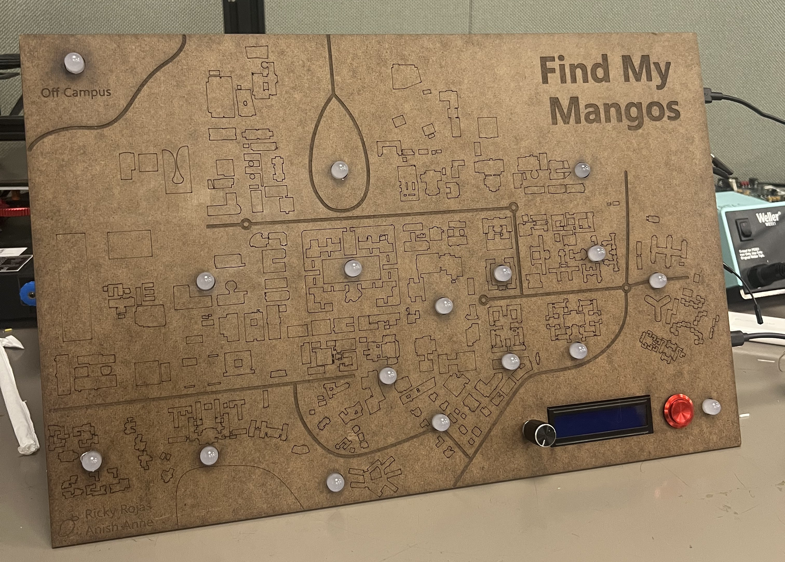

Find My Mangos
Navigating the rigid constraints of hardware and circuitry to translate digital location data into a tactile, real-time map.
Inspired by my previous attempt at translating a digital display of data into the real world, I knew that for my final project of CS107E: Computer Systems from the Ground Up (a class that had a strong emphasis on combining digital and physical systems) I wanted to take something that my friends and I used everyday (Apple’s Find My Friends) and turn it into something new and exciting. Like many Stanford students, my friends and I all share our locations with each other and will periodically check where we are around campus. I decided to create a physical version of the Find My campus map that, attached to a microcontroller, could update the location of each of my friends in real time.

This was a much more technical and ambitious project than most of the other artifacts in my portfolio. We had to set up a web server to ping our friend’s phones, program the microcontroller to power a set of buttons, a small display, and all of the colored LEDs that made up the board. My main contribution to the project was to design and build the board, wire the LEDs, and write the code for the display.
At first glance this project may not seem like it involves a lot of science communication, but from beginning to end it actually shares a lot of the same pathways as my science communication projects. I started with a dataset and an idea of how I wanted to share that data with the world. The main difference was that I was much more constrained in how I could share that data with the world. However, the physical limitations of the medium also lead to a lot of ingenuity to be able to communicate different aspects of the data (such as using brightness replicate a histogram-like effect with bright locations having more people, assigning specific colors to certain people so that they could be more easily tracked, and a timelapse that let you quickly see the activity throughout the day).
This artifact is a great example of how the lessons I learned through the NSC expand beyond that science communication. The ideas of presentation and tools of rhetoric extend to many different domains that I work in.